Drives that vanished after a crash, or a finish flow that never saved.
Every drive is kept, as you go.
Recording is written to your iPhone every 30 seconds. Finishing saves straight away. Reviewing a drive is optional, never a second save step.
For learner drivers on iPhone, iPad and Apple Watch
Driving Hour Tracker is a learner driver logbook for iPhone. One tap times each supervised practice drive, night hours are worked out from sunset, every route goes on the map, and a tidy PDF report is always ready. Invite your supervisor and they see every drive on their own iPhone.
Why we built it
The same four complaints kept coming up. Each one became a rule for this app.
Drives that vanished after a crash, or a finish flow that never saved.
Recording is written to your iPhone every 30 seconds. Finishing saves straight away. Reviewing a drive is optional, never a second save step.
Sign-ups, verification codes and cloud errors before a 20-minute drive.
Your logbook lives on your device first and syncs through your own iCloud when you're signed in. No sign-up, no verification codes, nothing to remember.
Ads between you and the Start button.
No ads, no pop-ups, no upsells while you're recording. Start, drive, finish.
Totals that don't add up, and night hours that seem to count twice.
Hours and minutes everywhere, night always shown inside the total, and what's left to your goal on the front page.
One drive, start to finish
Pick who's supervising and go. The timer, the route and the supervisor are saved together as you drive.
Every 30 seconds the drive is written to your iPhone, even if the app closes. A crash never costs you the drive.
When the sun sets where you are, the rest of the drive counts as night. No working it out at the end.
Stop driving and the app offers to finish. Leave it and the drive is saved five minutes later. Or keep recording.
Finishing saves the drive immediately. Check or edit it later. There's no second save step to miss.
Scroll to drive
Features
A nudge to record as you set off, and an automatic finish once you park. Detection is best effort and never ends a drive on its own.
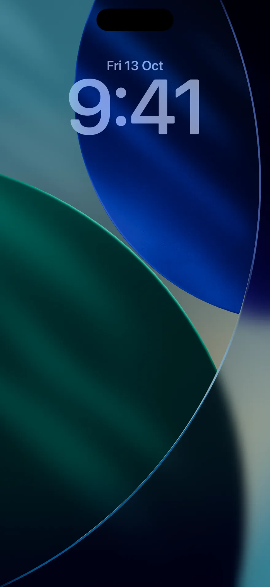
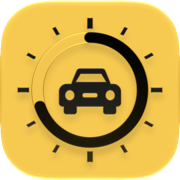
Total and night hours against your own goals, with what's left to go.
Sunset where you drive splits every drive into day and night for you.
See where each drive went, with the distance on every one. Routes stay in your logbook and are left out of reports.
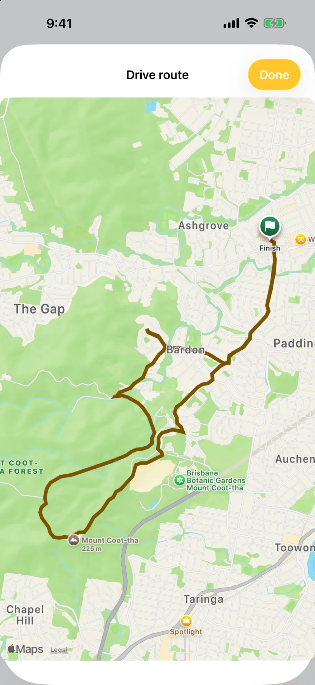
Start, pause and finish drives hands-free, or ask how many hours you have. A Control Center toggle starts and finishes drives too.
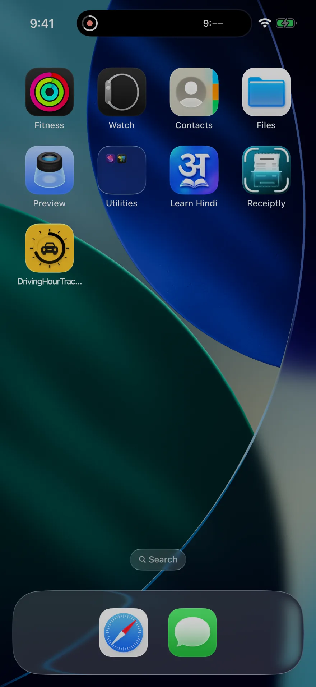
A Live Activity on the Lock Screen and in the Dynamic Island, with the timer and your goal.
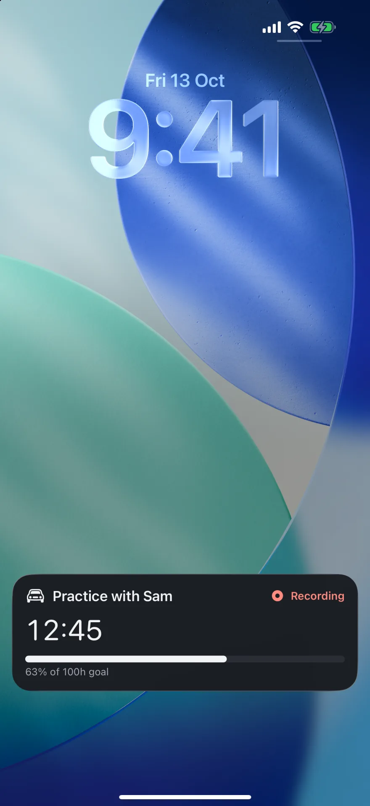
Pick your supervisor, then start, pause or finish on Apple Watch. Complications show your progress.
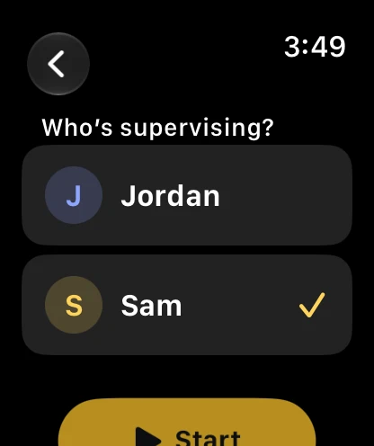
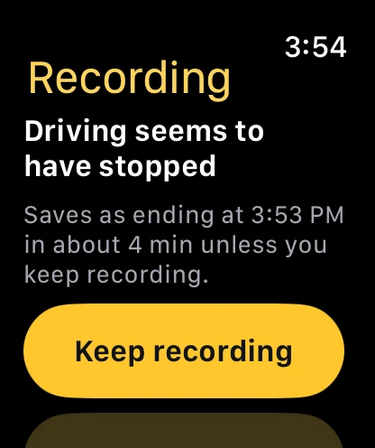
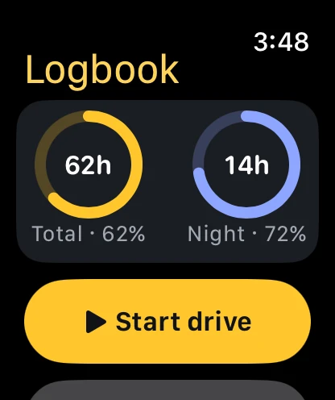
Add their Apple Account email and send them the link. They get a live copy over iCloud, view only or able to add drives. Inviting is optional; a supervisor can also be just a name on your drives.
A PDF of every drive with date, times, night hours and supervisor. For your records; it doesn't replace any official form.
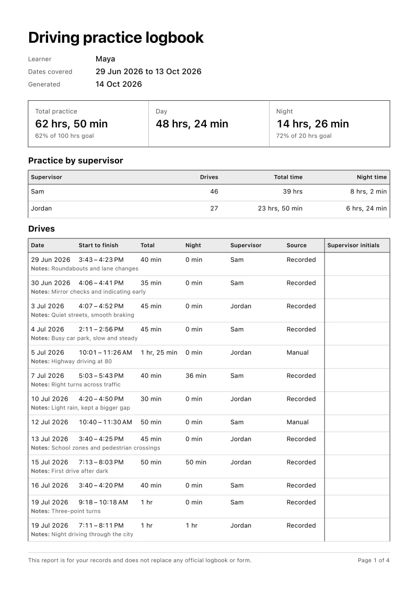
Save a backup with everything, routes included, and restore it on any iPhone or iPad. Import a spreadsheet of drives you logged elsewhere.
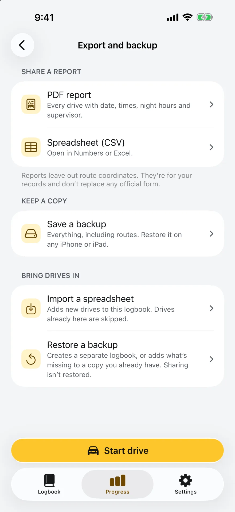
Devices
One logbook, everywhere you are. The iPhone records; the watch and iPad follow along.
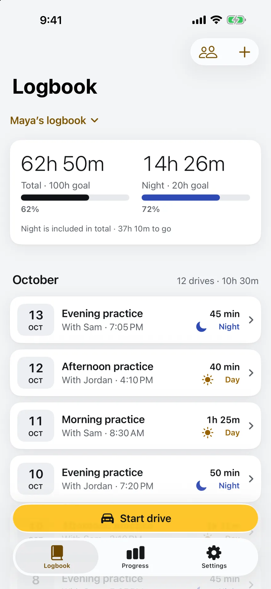
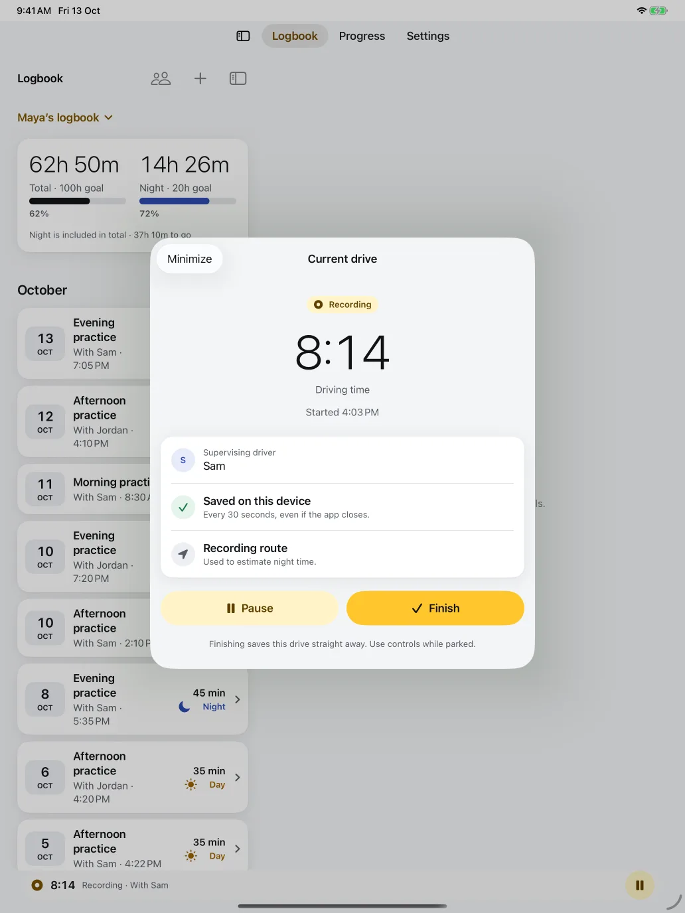
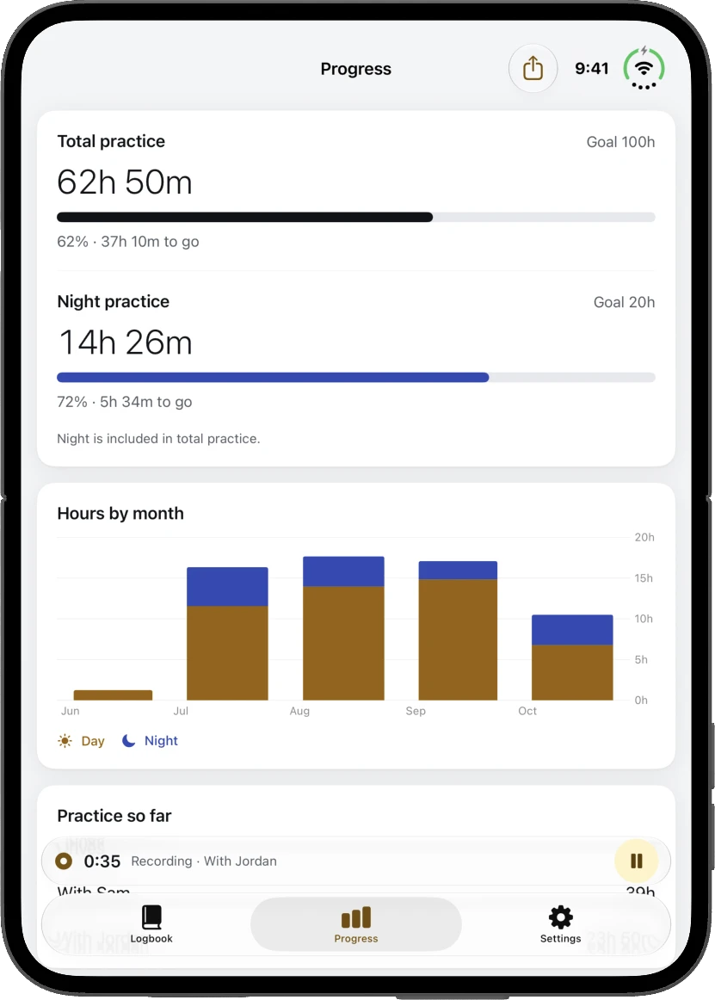
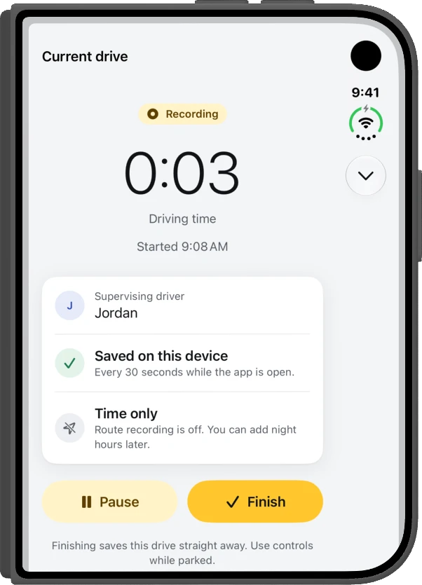
Your goals
Learner hour requirements differ by country and state, and some authorities require their own logbook, app or form. So the goals are yours to set, and the front page always shows what's left.
A common target for learners under 25 in New South Wales and Victoria.
What Queensland asks of learners under 25.
Typical for a teen learner's permit in many US states.
Examples only. Check your licensing authority's current requirements and what records it accepts. The app's report is for your own records and doesn't replace an official logbook or form.
Questions
No. Open the app, type the learner's name and a first supervisor, and start your first drive. The logbook is saved on your iPhone or iPad first. If you're signed in to iCloud it also syncs to your own iCloud account, so it's on your iPad too and you can share it with a supervisor.
Yes. Recording, the timer, night estimates and the logbook all work offline. iCloud sync and sharing catch up whenever a connection is available.
The app uses sunset and sunrise at the places along your recorded route. Time after sunset counts as night and is shown inside the drive's total. You can edit the night minutes on any drive, and a drive with no route is flagged so you can add them.
The report lists every drive with its date, times, night hours and supervisor. It is for your records and doesn't replace an official logbook, app or form. Check what your licensing authority accepts before your test.
Every drive is written to your device every 30 seconds while recording. If the app closes, the drive is recovered at the next launch, paused at its last saved time, and marked for review so you can check the finish time. If a save ever fails, the recording stays on the device and you can share a recovery file.
Yes. Open Sharing from Settings, add their Apple Account email, choose view only or can add drives, and send them the invitation link. The logbook appears under Shared with me on their iPhone or iPad and stays in step over iCloud. They need the app and an iCloud account. Adding a supervisor's name alone doesn't share anything. See how sharing works.
Yes. The watch app shows your hours, lets you pick a supervisor, and starts, pauses and finishes drives while your iPhone is nearby. Complications show progress and a Start button.
On your device, in the app's own database, and in your own iCloud account when you're signed in to iCloud. If you share a logbook, the people you invite get a copy through iCloud too. There are no accounts with us, no analytics and no ads. See the privacy policy.
Driving Hour Tracker is on the App Store for iPhone, iPad and Apple Watch.